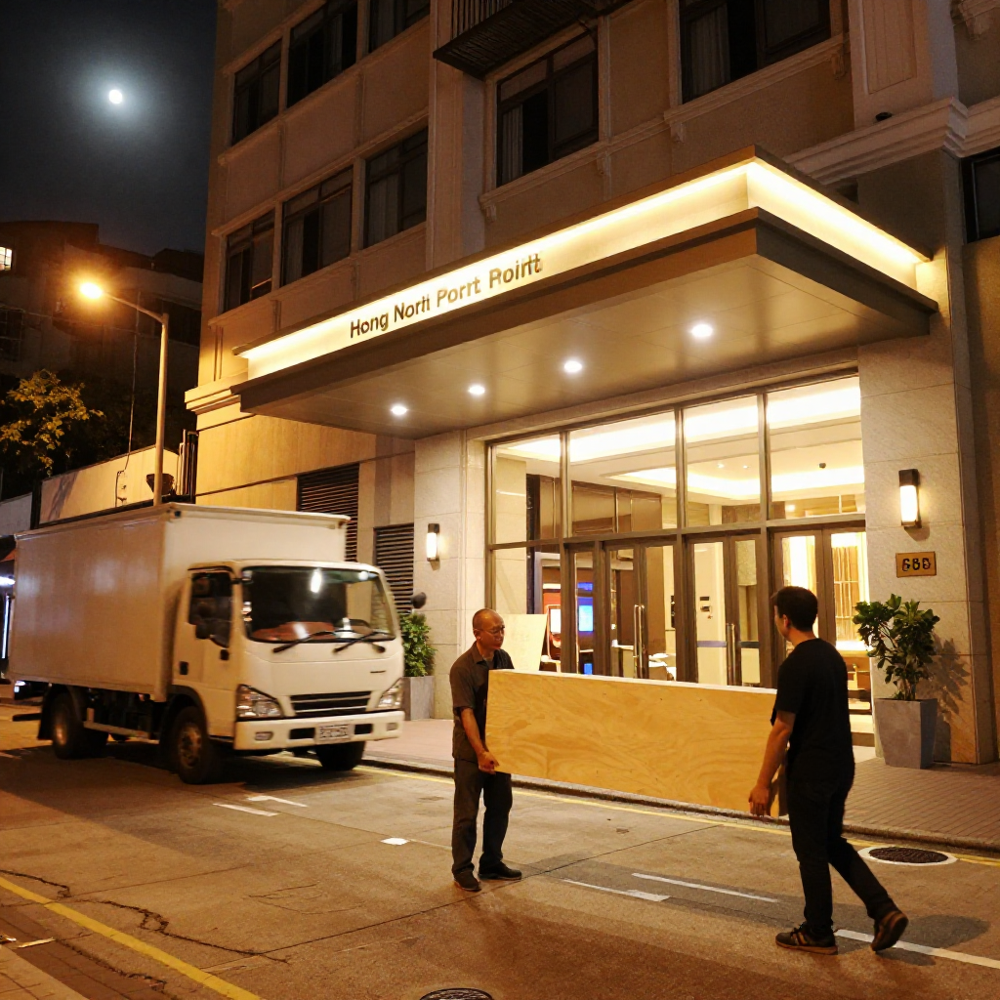
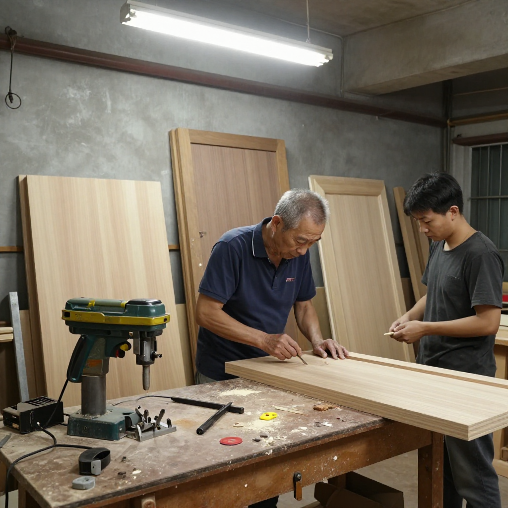
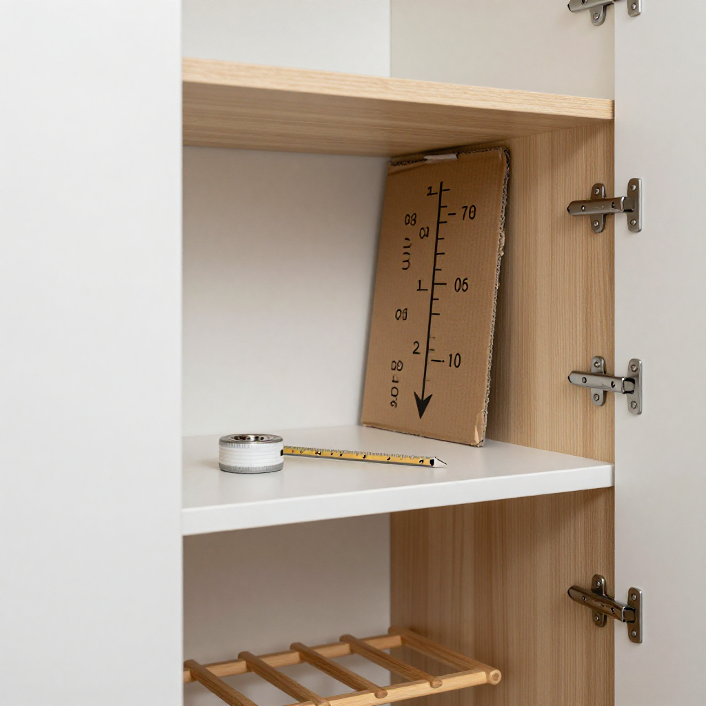
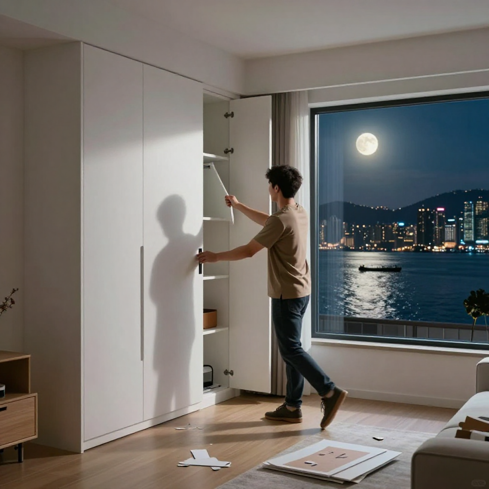
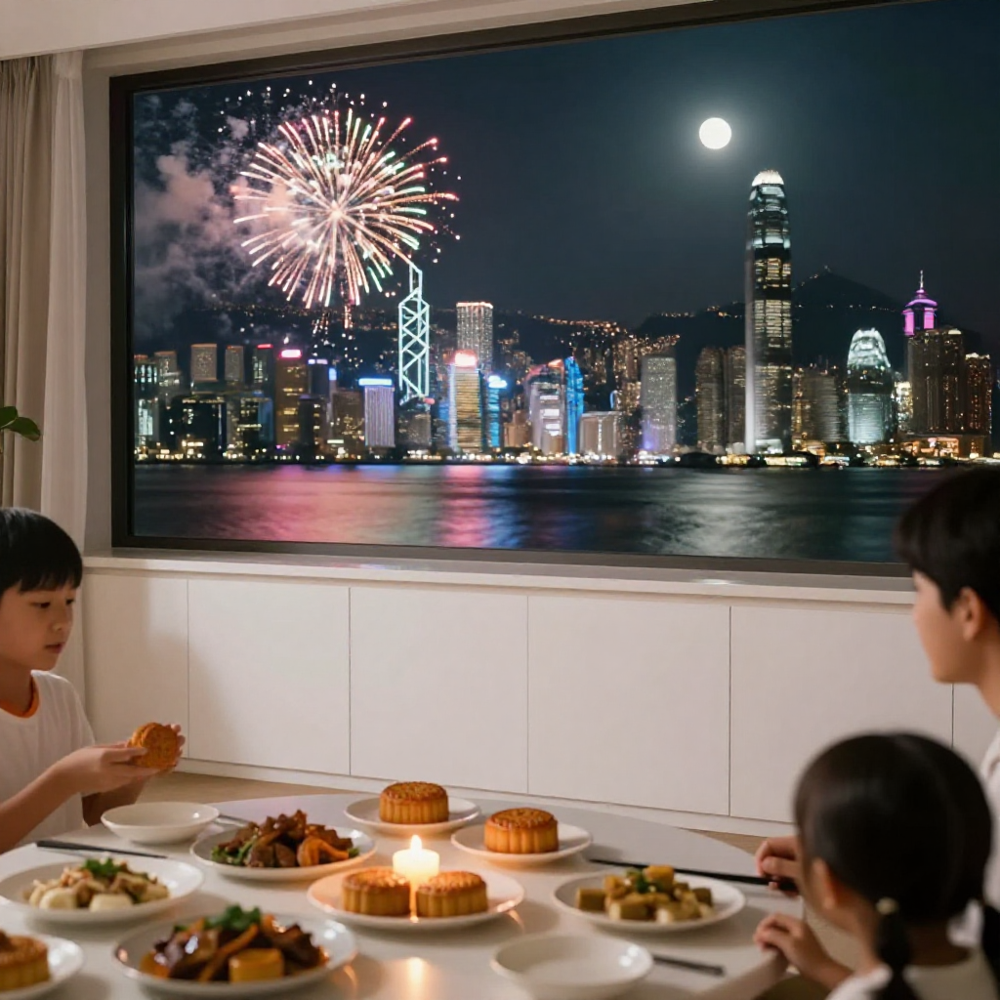

中秋前赶工的定制柜——陈师傅的熬夜与客人的惊喜

📍 場景：土瓜灣陳記木工工廠 → 北角私人屋苑｜主訪：陳師傅（陳志明，三十年全屋定制）｜記錄：張丹楓｜整理：雲蕾｜日期：2026 年 9 月 26 日（中秋節）｜WhatsApp 報價：852 5190 2328
序幕：中秋前一个礼拜，陈师傅接到一通急电话
中秋前一个礼拜，陈志明师傅的手机响个不停。
「陈师傅，我哋酒楼中秋晚宴要用嗰批屏风卡位，几时搞得掂啊？」港岛西环某酒楼的经理语气急促。
陈师傅放下手中的铅笔，睇了睇柜面上的图纸：「最迟听晚，一定送到。你放心，我陈志明做嘢唔会甩拖。」
呢个系陈师傅入行三十年来最常讲嘅一句说话。但今次单嘢，真系几急——客人姓周，中秋带埋两个小朋友回港探亲，一家人想趁节日气氛搞搞新意思，旧家具已经过时，尺寸亦唔啱小朋友用。
「周生，你哋间屋大概几大？」
「三房单位，但系客厅特别大——其实就系想趁中秋搞大啲，等老人家坐得舒服啲细路哥又可以有位跑。」
第一幕：深夜工场——徒弟阿康想走，师傅话唔走
晚上十一点，陈记木工的工场喺土瓜湾一间旧唐楼地下，锯木机已经暂停，但灯仍然亮着。师傅陈志明同徒弟阿康紧赶最后一批实木柜门。
「师傅，你今年六十三啦，唔使乜嘢都自己撑啰。」
阿康攰到打喊露，揉咗揉眼。
「你知唔知，呢个客人中秋前两日先至嚟搵我，话要换全屋家具，预算得闲，但系想中秋前搞掂。」
「咁样接单？唔系糊涂吗？」
「糊涂？做我哋呢行，最紧要就系帮人解决问题。客人中秋前要换新家私，梗系有佢嘅原因。唔理佢，我做师傅就失去意义。」
其实周生一家人已经十几年冇一齐过中秋。今年太太第一次喺内地放假可以回港，一家人想搞搞新意思。陈师傅接呢张单之前已经知道，呢个唔系一单普通装修，而系一家人的团聚。

第二幕：定制柜的门道——香港空间就得咁样用
香港地少人多，定制家具唔同内地，唔系为咗奢华，而系为咗将每一尺空间用到尽。
陈师傅为周生设计嘅方案好实用：客厅做了一排到顶储物柜，柜门用哑面白色焗漆，唔会话好张扬，但系储物量多咗三分一。中间留空一个凹位，专门摆周生收藏嘅音响设备，线槽全部预留好，唔使明线外露。
「最考功夫就系门口个鞋柜。周生一家人鞋多，唔同季节唔同size，我哋要量度每一对鞋嘅高度，先至设计隔板距离。」
阿康拿拿声跑去仓库摷嗰本记数本，里面记录咗陈师傅多年嚟累积嘅数据：男装皮鞋平均高度14厘米，女装高跟鞋在18至22厘米之间，儿童波鞋就11至15厘米。
「师傅，你点解唔用标准尺寸？」
「标准尺寸就系垃圾。香港人地方唔够，唔将就就系嘥。我哋做嘢，就系要将唔可能变成可能。」

第三幕：送柜嗰日——中秋前一晚，维港月光照进新柜
农历八月十四，星期日晚，陈师傅揸住货车将货物送到港岛。
周生屋企喺北角一个大型私人屋苑，楼龄二十几年，客厅空间唔算大，但系窗户对正维多利亚港，景观开扬。
「陈师傅，辛苦晒你哋！」
陈师傅指挥阿康将第一件储物柜抬起，稳稳哋摆入预留位置。然后用水平尺慢慢校正，确保柜门全部对齐。
「呢度要再磨一磨。」
陈师傅发现柜门同墙壁之间有道细细哋缝隙，用铅笔轻轻划低记号。
「陈师傅，你做呢行几耐啦？」
「三十年。」
「三十年！咁你系老师傅啰。点解仲系你自己送货运货？」
「自己送先至知啲家私摆喺边度最啱你。尺寸喺纸上睇係啱，但系摆入去就知有冇问题。」
呢句话，周生记低咗。

尾声：月光下的新柜，一家人嘅中秋
农历八月十五，中秋节当晚，周生一家人坐喺换上新家私嘅客厅度食饭。窗外维港两岸烟花绽放，屋内焗漆柜门倒映住月光。
周生影咗张相send俾陈师傅：「师傅，多谢你。中秋快乐。」
陈师傅冇回复，因为佢已经瞓着咗——连续赶工一个礼拜，攰到嘔。但系第二日早上六点，佢已经起身，唔知第几次检查货车，确保今日送货嘅家私冇甩漏。
香港，就系咁样运转落去。无数个陈师傅咁样嘅人，撑住呢个城市每一寸空间，每一盏灯光。

❓ 定制柜三问
Q1：香港定制家具点解唔可以用标准尺寸？
陈志明师傅讲：香港家居空间细，每一寸都系钱。标准尺寸系为「正常空间」设计，但香港唔少单位有门槛位、窗台柱、管道位——用标准尺寸塞唔入，就算塞得入都会浪费空间。定制家具就系要就每一个唔同嘅角落，将唔可能变成可能。鞋柜尤其明显：每家人嘅鞋款数量同高度都唔同，按实际数据设计先至好用。
Q2：中秋前赶工要注意乜？
陈师傅提醒：中秋前后师傅档期好full，建议提前至少半个月下单。如果真系好急，要理解师傅可能要做夜班，费用会贵少少。但系唔好为咗赶工而降低质量——柜门对不齐、焗漆未干就安装，反而整亲。沟通清楚边啲要靓、边啲可以等，分清优先级，先至可以顺利如期。
Q3：点样判断师傅系唔系真·老师傅？
陈师傅认为：最重要睇佢肯唔肯去你屋企企个位。净系睇图纸就报数嘅，十个有九个经验唔够。真正做开嘅师傅，唔怕麻烦，一定会去现场睇四次以上——水电位、管道位、门口阔度、窗台高度——呢啲资料唔会纸上嚟，一定要亲身度。第二个指标就系睇佢愿唔愿意解释点解要咁样做，唔系净系话「你就信我」。
本文配圖均為 AI 場景示意圖，僅供場景參考，並非真實工地照片或業主影像。
想知你個單位裝修要幾錢？
📱 一鍵 WhatsApp 張丹楓